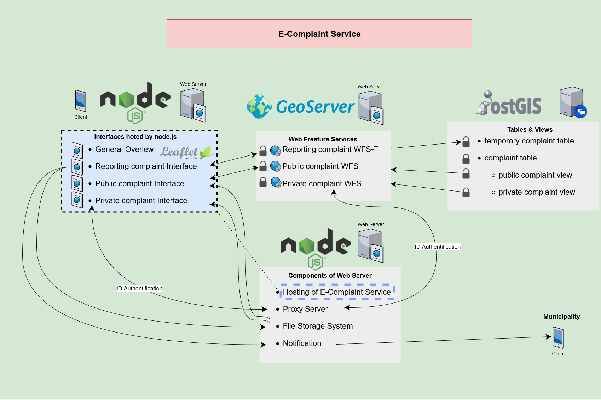

This project presents a lightweight, mobile-friendly web application that enables citizens to report spatial nuisances—such as illegal dumping, broken streetlights, or potholes—directly to their local municipality. The service is designed in line with contemporary e-Governance principles, emphasizing transparency, ease of use, and minimal personal data dependency. It facilitates two-way communication between citizens and public authorities, allowing users to track the status of their submitted complaints in real time.
The technical implementation is entirely based on open-source components and adheres to OGC standards for spatial data handling. The application uses Node.js on the backend, providing a lightweight and asynchronous server environment. Spatial functionalities are integrated via a GeoServer instance, which serves as the OGC-compliant Web Map Service (WMS) and Web Feature Service (WFS) provider. Geospatial data is stored and managed using PostgreSQL with the PostGIS extension, ensuring reliable and efficient spatial querying.
The front end of the application is implemented using standard web technologies—HTML5, CSS3, and JavaScript—alongside the OpenLayers library for map rendering and user interaction. Users can place a marker on the map, provide descriptive information about the issue, and optionally upload a photo. The application does not require user registration, promoting privacy and accessibility, while still enabling the municipality to provide updates linked to the reported location.

This project showcases a privacy-respecting, standards-based approach to participatory urban governance. By combining widely adopted geospatial technologies with a lightweight, service-oriented architecture, it delivers a scalable and replicable solution for municipalities aiming to increase citizen engagement and improve spatial issue reporting workflows.